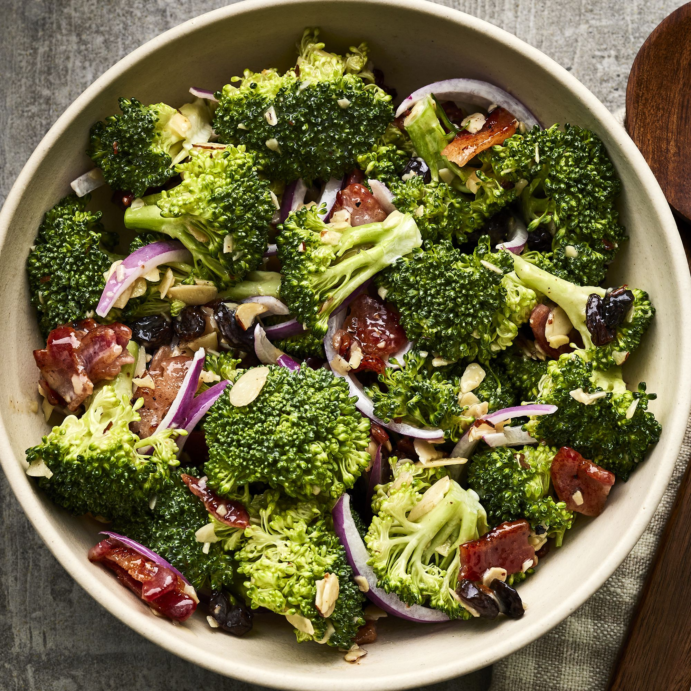

Broccoli Salad

Description
Savory from vegetables? Is that possible?
Let's see how this quick and easy to made
broccoli salad taste! Won't take more than 30
minutes.
Ingredients
- 2 cups Small Broccoli florets
- 1/4 cup Carrots (chopped)
- 1/4 cup Cucumber (chopped)
- 1/4 cup Onions (chopped)
- 1/4 cup Tomatoes (chopped)
- 1/4 cup Yellow and Red Peppers (chopped)
- 2-3 Lettuce Leaves
- 1 tbsp Coriander Leaves (chopped)
- 4-5 Mint Leaves
- 2 tbsp Rasins and Cashew Nuts
- 1/4 cup Hung Curd
- Lemon
- 1 tbsp Honey
- 1 tsp Black Pepper
- 1/4 tsp Salt
Steps
- Combine the ingredients for
the dressing in a bowl and
mix it well. Refrigerate until
not in use.
- Cut the broccoli in small florets.
- Heat water in a pan and blanch
the broccoli for 2-3 mins.
- Wash the broccoli florests
in ice cold water.
- Combine all the salad ingredients
in a large bowl, pour the hung
curd dressing over,
and mix it well. Refrigerate
for 30 mins. Stir again and
serve chilled!